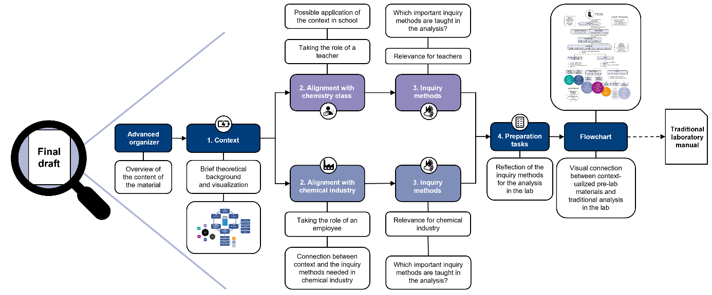
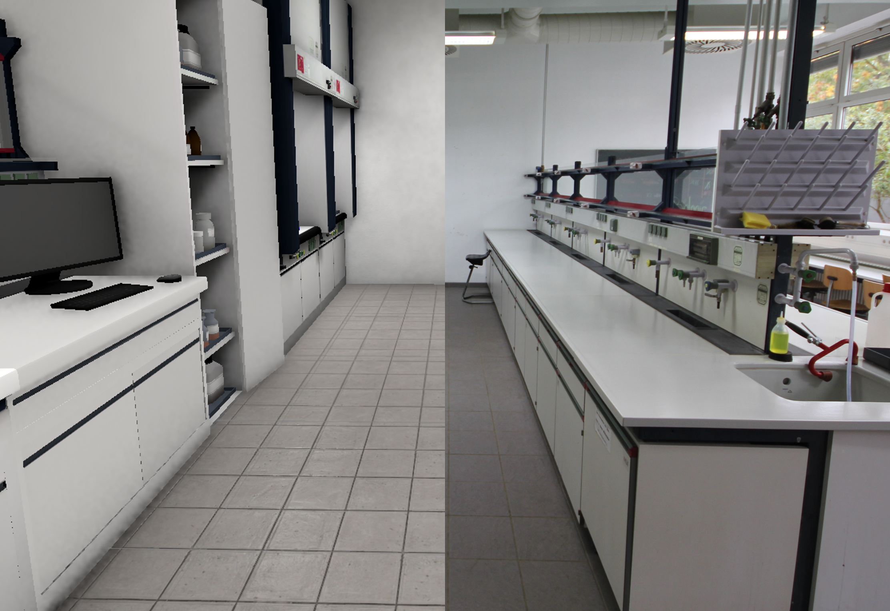
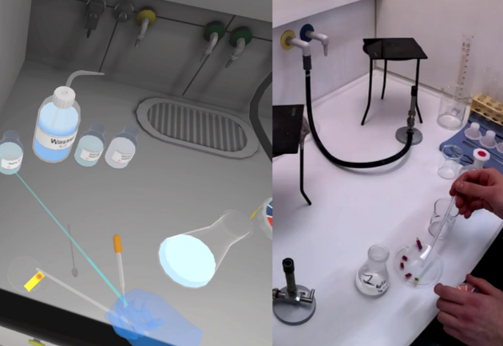

4 Kriterien
4.1 Aufbau der Steckbriefe
Jedes Kriterium in diesem Kapitel wird in einem Steckbrief beschrieben. Alle Steckbriefe folgen derselben Gliederung, damit sich die Kriterien vergleichen lassen und Leser:innen gezielt einzelne Aspekte nachschlagen können. Die Leitfragen in Tabelle 4.1 geben an, worauf ein Abschnitt eingeht. Sie sind als Anregung gedacht, nicht jeder Steckbrief beantwortet alle Fragen.
| Abschnitt | Leitfragen |
|---|---|
| Allgemeine Einführung/Beschreibung | Was ist unter dem Kriterium zu verstehen, und welche Theorien liegen ihm zugrunde? Gibt es unterschiedliche Auffassungen oder Schwerpunkte? |
| Befunde zur Wirkung | Welche Wirkung wird dem Kriterium zugeschrieben, und welche empirischen Befunde aus Studien und Meta-Analysen gibt es dazu? |
| Literaturbeispiele zur Umsetzung | Welche Projekte oder Programme setzen das Kriterium zentral um, und welche prototypischen Beispiele werden in der Literatur herangezogen? |
| Umsetzungsbeispiel (eigene Projekte/Forschung) | Wie wurde das Kriterium in einem eigenen Projekt umgesetzt? Beschrieben werden Studienkontext, Zielstellung, Ergebnisse, Publikationen und Lessons learned. |
| Umsetzungsfacetten | Woran zeigt sich eine systematische Umsetzung des Kriteriums, und welche Facetten eignen sich als Indikatoren? |
| Umsetzung im Prozess | Wie lässt sich der Prozess der Umsetzung systematisieren, etwa mit Didaktischer Rekonstruktion oder Design-Based Research? Welche Stakeholder werden wie eingebunden? |
| Ansätze zur Absicherung der Umsetzung (Implementation-Check) | Wie lässt sich prüfen, in welchem Grad das Kriterium umgesetzt wurde, und welche Methoden und Indikatoren eignen sich dafür? |
| Ansätze zur Untersuchung der Wirkung (Effect-Check) | Wie lässt sich die Wirkung der Umsetzung überprüfen, und welche Methoden und Indikatoren eignen sich dafür? |
| Einsatzbedingungen/Umsetzungswissen | Welche Voraussetzungen müssen bei Lehrenden, Lernenden und Lernumgebung erfüllt sein, und welche Phasen des Einsatzes sind kritisch? |
| Transferwissen | Für welche Unterrichtssituationen sind die Materialien gedacht, und wie lassen sich ihre nachhaltige Nutzung, die Erprobung und die gemeinsame Reflexion unterstützen? |
| Quellen | Literatur des Steckbriefs |
Die Abschnitte „Einsatzbedingungen/Umsetzungswissen“ und „Transferwissen“ sind optional. Jeder Steckbrief endet mit seinen Quellen.
4.2 Kumulatives Lernen
Allgemeine Einführung/Beschreibung
Unter kumulativem Lernen versteht man einen Lernprozess, bei dem neues Wissen systematisch auf bereits vorhandenem Wissen aufbaut, dieses vertieft, erweitert und vernetzt (Bransford et al., 2000). Es ist das Gegenteil von „punktuellem“ oder „episodischem“ Lernen, bei dem Lerninhalte isoliert nebeneinanderstehen und nach der Prüfung oft wieder vergessen werden („Bulimie-Lernen“).
Kumulatives Lernen basiert auf der Annahme, dass Wissen aktiv in bestehende kognitive Strukturen integriert werden muss (Assimilation/Akkommodation nach Piaget; allgemein: Konstruktivismus). Der Begriff wurde von Gagné (1970) geprägt, wobei Lernen von ihm als Hierarchie verstanden wird, in der komplexere intellektuelle Fähigkeiten die Beherrschung einfacherer Teilkompetenzen voraussetzen. Das Konzept des Spiralcurriculums nach Bruner (1970), bei dem Themen auf steigendem Abstraktionsniveau wiederholt aufgegriffen werden, ist damit eng verwandt. Bei der Art des „Vertiefens“ oder „Vernetzens“ wird generell zwischen vertikaler und horizontaler Vernetzung unterschieden, womit entweder die Vernetzung zwischen Themen oder Schulfächern (vertikal) oder von Kompetenzen und Inhalten über Schuljahre und Bildungsstufen hinweg gemeint sind. Auch wird oft zwischen inhaltlich-systematischer Kumulation und kompetenzorientierter Kumulation (z. B. fachmethodische Fähigkeiten) unterschieden (Bernholt et al., 2018).
Befunde zur Wirkung
Kumulatives Lernen gilt als entscheidender Faktor für den Aufbau von anschlussfähigem Wissen und die Vermeidung der Anhäufung von „trägem“ Wissen (Renkl, 2010). Ein Fokus der Wirkungsforschung liegt daher auf der Förderung des Wissenstransfers auf neue Anwendungskontexte und langfristige Behaltensleistung.
Die PISA- und TIMSS-Studien zeigten für Deutschland Defizite im kumulativen Wissensaufbau (besonders in den Naturwissenschaften; Baumert et al., 1997). Die Wirksamkeit kumulativ abgestimmter Lerngelegenheiten wird auch von Hattie (2008) hervorgehoben, dort unter den Stichworten „prior achievement“ (als individueller Prädiktor) und „integrative models“ (als Interventionsansatz). Neuere Meta-Analysen deuten darauf hin, dass die prädiktive Wirkung des Vorwissens steigt, je spezifischer dieses Vorwissen ist (Simonsmeier et al., 2022). Auch Längsschnittstudien zeigen, dass Lernende, die Vernetzungen aktiv herstellen, in späteren Lernphasen deutlich schneller neue Konzepte integrieren können (allerdings gibt es nur sehr wenige; Bernholt et al., 2020).
Literaturbeispiele zur Umsetzung
Ein Fokus auf kumulatives Lernen findet sich in vielen Reformprojekten. Im SINUS-Programm (Steigerung der Effizienz des mathematisch-naturwissenschaftlichen Unterrichts) war „Kumulatives Lernen“ eines der zentralen Module zur Unterrichtsentwicklung (SINUS, o.D.). In kontextorientierten Ansätzen wie Chemie im Kontext (ChiK) sollten Basiskonzepte kumulative Lernpfade über verschiedene Kontexte hinweg strukturieren (was aber nur wenig untersucht wurde; Demuth et al., 2008). Die Forschergruppe Naturwissenschaftlicher Unterricht (NWU) an der Universität Duisburg-Essen hat Wirkungen vertikaler Vernetzungen in mehreren, koordinierten Forschungsarbeiten untersucht (Fischer & Sumfleth, 2013; Neumann et al., 2008). Neuere Ansätze werden unter dem Ansatz der Learning Progressions durchgeführt (Bernholt & Sevian, 2018; Duschl et al., 2011).
Umsetzungsbeispiel (eigene Projekte/Forschung)
Im Rahmen des ALICE-Projekts wurde im Teilprojekt Chemie (Lossjew, 2025) das Verständnis chemischer Reaktionen in der Oberstufe untersucht. Der Fokus lag dabei auf den Themen Reaktionskinetik und chemisches Gleichgewicht. In der Studie wurde untersucht, wie sich die konzeptuellen Modi der Schüler:innen – spezifische Denkweisen über den Beginn, den Verlauf und das Ende chemischer Reaktionen (Yan & Talanquer, 2015) – durch den an einem Progressionsmodell orientierten Unterricht entwickeln. Anhand eines quasi-longitudinalen Designs wurden N = 183 Schüler:innen der Sekundarstufe II vor und nach der Durchführung der digital umgesetzten Unterrichtseinheit (Lossjew & Bernholt, 2025) mit Hilfe von offenen Aufgaben befragt. Die konzeptuellen Modi wurden sowohl deskriptiv als auch inferentiell analysiert, wobei Differenz-in-Differenzen-Schätzungen und ordinale logistische Regression einbezogen wurden, um die Auswirkungen des Unterrichts und die Rolle von Vorwissen und fachlichem Interesse zu untersuchen. Die Ergebnisse zeigen signifikante Übergänge zu einem elaborierteren mechanistischen Denken, insbesondere bei Schüler:innen, die sowohl Unterricht zu Kinetik als auch zu Gleichgewicht erhielten. Vorherige konzeptuelle Modi erwiesen sich als starker Prädiktor für das Verständnis nach der Einheit, was die kumulative Natur der konzeptuellen Entwicklung unterstreicht (Lossjew & Bernholt, subm.).
Umsetzungsfacetten
Eine systematische Umsetzung kumulativer Lernansätze zeichnet sich durch folgende Indikatoren aus:
- Fokus auf zentrale Konzepte oder Kompetenzen (die je nach Fach, Land oder Forschungsrichtung in den jeweiligen Publikationen als Basiskonzepte, Leitideen, Big Ideas, Cross-cutting Concepts o. Ä. bezeichnet werden), die als roter Faden dienen.
- Systematische Aufgaben zur Vorwissensaktivierung, um wiederholt und explizit Rückbezüge auf früher gelernte Inhalte zu Beginn neuer Sequenzen oder im Verlauf der Lerneinheit herzustellen (vertikale Vernetzung) und/oder wiederholte Herstellung von Querbezügen (horizontal) und die vertiefende Weiterführung (vertikal).
- Seltener: Förderung metakognitiver Fähigkeiten, um Lernende darin zu unterstützen, selbst zu reflektieren, wie neues Wissen mit altem zusammenhängt (bspw. Maßnahmen zur Zielklärung, zum Umgang mit Feedback, zur Selbsteinschätzung).
Umsetzung im Prozess
Der Prozess der Umsetzung kann auf mehreren Ebenen betrachtet werden:
- Curriculare Ebene: Erstellung längerfristiger Curricula oder Lehrpläne, die Progressionen festlegen, die längere Zeiträume (Monate bis mehrere Schuljahre) umfassen.
- Unterrichtsebene: Planung von Unterrichtseinheiten als „Lernpfade“, die ein Thema (selten auch mehrere Themen) systematisch erschließen und dabei Vorwissen und Vorbereitung nachfolgender Themen berücksichtigen.
Bei der Konzeption eines Spiralcurriculums bzw. eines Lernpfads muss die Sachstruktur des jeweiligen Fachs (oder, im Fall vertikaler Vernetzung, der jeweiligen Fächer) in eine Sachstruktur des Unterrichts überführt werden; dabei müssen zentrale Bezüge zwischen den Inhalten herausgearbeitet werden. Im Unterricht müssen diese Bezüge dann sinnhaft hergestellt werden. Dabei kommt Basiskonzepten (bzw. Leitideen, …) als von außen in den Prozess der Wissensaneignung eingebrachte Elemente, die in optimaler Weise zum kumulativen Aufbau neuer Wissensstrukturen beitragen sollen, eine besondere Bedeutung bei. Dieser Prozess der Analyse der Sachstruktur und ihrer Rekonstruktion wird auch als Elementarisierung (z. B. Reinhold, 2006) oder didaktische Rekonstruktion (Kattmann et al., 1997) bezeichnet.
Relevante Stakeholder sind in diesem Kontext natürlich Schüler:innen und Lehrkräfte, ggf. auch Schulleitungen oder Mitglieder von Fachkommissionen (bspw. zur Überarbeitung von Lehrplänen). Schüler:innen kommt dabei in erster Linie eine evaluative Rolle zu (mit Blick auf „üblichen“ Unterricht oder zur Einschätzung einer Intervention), während die anderen Gruppen (auch) in Planungs- und Reflexionsprozesse kumulativer Lernpfade oder Curricula eingebunden werden können.
Ansätze zur Absicherung der Umsetzung (Implementation-Check)
Um zu prüfen, ob und inwieweit kumulativ unterrichtet wird, finden sich in der Literatur unterschiedliche Ansätze:
- Curriculum-Analysen: Abgleich der Unterrichtspläne auf Redundanzen und Progressionslücken.
- Fidelity-Checks: Beobachtung oder Befragung (i. d. R. von Schüler:innen, manchmal auch von Lehrkräften), ob Vorwissen tatsächlich aktiv verknüpft wird.
- Concept Maps: Visualisierung der Wissensstruktur von Lernenden zu verschiedenen Zeitpunkten.
- Unterrichtsbeobachtungen: Häufigkeit von Rückbezügen im Unterrichtsgespräch; Qualität der Aufgabenstellungen (beziehen diese explizit Wissen aus dem Vorthema/Vorjahr ein?)
Ansätze zur Untersuchung der Wirkung (Effect-Check)
Generell werden Interventionsstudien und Längsschnittstudien als Mittel der Wahl angegeben. Aufgrund der Zeitskala sind diese aber i. d. R. sehr aufwändig und daher entsprechend selten. Beispiele für einen Interventionsansatz sind Studien zum IQUEST-Curriculum, in denen eine „kumulative“ Unterrichtseinheit gegen „traditionellen“ Unterricht verglichen wurde (Krajcik et al., 2008). Unterschiedliche „kumulative“ Ansätze wurden im Projekt Elevate (Fortus et al., 2019) verglichen. Längsschnittuntersuchungen im Chemieunterricht finden sich bei Bernholt et al. (2020) oder Fischer & Sumfleth (2013). Hier wurde vor allem versucht, durch Konzept- bzw. Kompetenztests die Lernentwicklung über mehrere Schuljahre abzubilden. „Kürzere“ Studien versuchen Effekte kumulativen Lernens durch Transfertests zu untersuchen. Kehne (2019) hat dies auf Basis unterschiedlich kontextualisierter Unterrichtseinheiten analysiert.
Generelle Indikatoren sind häufig (höhere) Lernzuwächse, Transferraten oder die Stabilität des Wissens über die Zeit (follow-up tests), manchmal auch inhaltliche Indikatoren wie die Komplexität/Vernetztheit kognitiver (konzeptbezogener) Strukturen auf Basis von Interviews, offener Antworten oder Concept Maps.
Quellen
4.3 Kognitive Belastung/Cognitive Load
Allgemeine Einführung/Beschreibung
Der Begriff Cognitive Load beschreibt die kognitiven Anforderungen, die eine Lernaufgabe an das Arbeitsgedächtnis stellt. Die zugrunde liegende Cognitive Load Theory (CLT) geht davon aus, dass das menschliche Arbeitsgedächtnis nur eine begrenzte Menge an Informationen gleichzeitig verarbeiten kann, während das Langzeitgedächtnis über eine sehr große Kapazität zur Speicherung von Wissensstrukturen verfügt. Lernen wird daher maßgeblich davon beeinflusst, wie stark das Arbeitsgedächtnis durch eine Lernaufgabe beansprucht wird (Sweller et al., 1998; Sweller et al., 2019).
Ziel instruktionalen Designs ist es daher, dass kognitive Ressourcen effizient genutzt werden und der Aufbau von Wissensstrukturen (Schemas) unterstützt wird.
Die Cognitive Load Theory unterscheidet drei Arten kognitiver Belastung (Sweller et al., 1998):
- Intrinsic cognitive load: ergibt sich aus der inhärenten Komplexität des Lerngegenstands bzw. aus der Anzahl gleichzeitig zu verarbeitender Informationselemente.
- Extraneous cognitive load: entsteht durch die Art der Präsentation von Informationen oder durch Aufgabenformate, die zusätzliche kognitive Verarbeitung erfordern, ohne direkt zum Lernen beizutragen.
- Germane cognitive load: bezeichnet kognitive Ressourcen, die tatsächlich für den Aufbau und die Organisation von Wissensstrukturen eingesetzt werden.
Ein zentrales Ziel instruktionalen Designs besteht daher darin, extraneous load zu reduzieren, intrinsic load angemessen zu steuern und germane load zu fördern.
Befunde zur Wirkung
Zahlreiche empirische Studien zeigen, dass instruktionale Designs, die unnötige kognitive Belastung reduzieren, positive Effekte auf Lernerfolg, Problemlösefähigkeit und Wissenstransfer haben. Besonders gut untersucht sind dabei instruktionale Maßnahmen, die Suchprozesse beim Problemlösen reduzieren oder die Aufmerksamkeit gezielt auf relevante Informationen lenken.
Ein besonders gut untersuchter Ansatz ist das Lernen mit Worked Examples. Dabei werden Aufgaben gemeinsam mit ihren vollständigen Lösungsschritten präsentiert. Dies reduziert Suchprozesse beim Problemlösen und ermöglicht es Lernenden, sich stärker auf den Aufbau von Problemlöseschemata zu konzentrieren (Renkl, 2014).
Auch Designprinzipien aus der Multimediaforschung zeigen konsistente Effekte. Beispielsweise konnte gezeigt werden, dass Signalling – also das Hervorheben zentraler Elemente in komplexen Darstellungen – die Aufmerksamkeit von Lernenden gezielt auf relevante Informationen lenkt, extraneous cognitive load reduziert und Lernleistungen verbessert (Rodemer et al., 2022).
Gerade in naturwissenschaftlichen Fächern mit komplexen visuellen Darstellungen, wie der Chemie, kann eine gezielte Gestaltung von Lernmaterialien dazu beitragen, dass Lernende relevante Merkmale schneller erkennen und kognitive Ressourcen stärker für konzeptuelles Verständnis genutzt werden.
Literaturbeispiele zur Umsetzung
Eine Studie von Rodemer et al. (2022) untersuchte die Wirkung unterschiedlicher Signalling-Formen in instruktionalen Videos zu organischen Reaktionsmechanismen. In einem Eye-Tracking-Experiment mit Studierenden wurden drei Bedingungen verglichen: Videos ohne, mit statischen und mit dynamischen Hervorhebungen. Neben Blickbewegungen wurden auch Lernleistungen sowie subjektiv berichtete kognitive Belastung erhoben. Die Ergebnisse zeigen, dass dynamische Hervorhebungen die Aufmerksamkeit der Lernenden stärker auf relevante Bereiche der Repräsentationen lenken und gleichzeitig extraneous cognitive load reduzieren können. Zudem zeigten Lernende in dieser Bedingung höhere Retentionsleistungen. Die Studie verdeutlicht damit die Bedeutung von instruktionalem Design bei der Arbeit mit komplexen fachlichen Darstellungen und zeigt exemplarisch, wie Prinzipien der Cognitive Load Theory in multimedialen Lernumgebungen umgesetzt werden können.
Umsetzungsbeispiel (eigene Projekte/Forschung)
Im Rahmen des Forschungsprojekts „Adaptive Unterstützung beim Problemlösen in der Organischen Chemie“ (ATP-OC) wurde untersucht, wie unterschiedliche instruktionale Ansätze Lernprozesse bei der Arbeit mit Reaktionsmechanismen beeinflussen und welche Formen instruktionaler Unterstützung das Problemlösen von Studierenden besonders effektiv fördern können. Ausgangspunkt ist die Annahme, dass mechanistisches Problemlösen sowohl hohe repräsentationale Anforderungen als auch hohe kognitive Belastung mit sich bringt.
In einer experimentellen Studie mit Studierenden wurden zwei instruktionale Ansätze verglichen: perceptual learning tasks, die darauf abzielen, diagnostisch relevante strukturelle Merkmale in Molekülrepräsentationen schneller zu erkennen, sowie worked examples, die Lösungswege schrittweise darstellen und so Suchprozesse beim Problemlösen reduzieren und den Aufbau von Problemlöseschemata unterstützen.
Bei der Entwicklung der Lernmaterialien wurden zentrale Designprinzipien der Cognitive Load Theory berücksichtigt, insbesondere solche, die auf eine Reduktion von extraneous cognitive load abzielen (z. B. klare Strukturierung der Materialien, Hervorhebung relevanter Informationen sowie eine schrittweise Darstellung von Lösungsprozessen). Die Materialien wurden in mehreren Iterationsschritten entwickelt und im Rahmen von Expert:innenbefragungen sowie Testdurchläufen mit der Zielgruppe überprüft und überarbeitet, um potenzielle Verständnishürden zu identifizieren und unnötige kognitive Belastung zu reduzieren.
Umsetzungsfacetten
Eine systematische Umsetzung von Cognitive-Load-Prinzipien in Lernmaterialien kann sich durch verschiedene Gestaltungsmerkmale auszeichnen:
Reduktion extraneous load:
- klare Strukturierung von Materialien
- räumliche Nähe zusammengehöriger Informationen
- Vermeidung redundanter Darstellungen
- Hervorhebung relevanter Elemente (Signalling)
Steuerung intrinsic load:
- Segmentierung komplexer Inhalte
- schrittweiser Aufbau von Lösungsprozessen
- Anpassung der Aufgabenkomplexität an das Vorwissen der Lernenden
Förderung germane load:
- explizite Darstellung von Lösungsstrategien
- Nutzung von worked examples
- Aufgabenformate, die den Aufbau konzeptueller Zusammenhänge unterstützen
Die genannten Gestaltungsprinzipien lassen sich aus zentralen Instructional-Design-Effekten der Cognitive Load Theory ableiten, wie etwa dem worked example effect, split-attention effect oder redundancy effect (Mayer, 2020; Sweller et al., 1998; Sweller et al., 2011).
Umsetzung im Prozess
Die Berücksichtigung kognitiver Belastung kann in verschiedenen Phasen der Materialentwicklung erfolgen.
Zunächst kann analysiert werden, welche Aspekte eines Lerngegenstands besonders hohe intrinsic cognitive load erzeugen (z. B. viele miteinander verknüpfte Konzepte oder komplexe Repräsentationen). Darauf aufbauend können Lernmaterialien so gestaltet werden, dass diese Komplexität schrittweise eingeführt wird.
Für die Entwicklung entsprechender Materialien eignen sich insbesondere iterative Entwicklungsansätze wie Design-Based Research, bei denen Materialien wiederholt entwickelt, erprobt und überarbeitet werden.
Ansätze zur Absicherung der Umsetzung (Implementation-Check)
Die Umsetzung von Cognitive-Load-Prinzipien kann auf unterschiedliche Weise überprüft werden, beispielsweise:
- Expert:innenanalysen von Lernmaterialien, z. B. hinsichtlich der Einhaltung von Multimedia-Designprinzipien
- Qualitative Nutzungsstudien mit Lernenden (z. B. Think-Aloud-Protokolle während der Bearbeitung), um zu untersuchen, wie Aufgaben verarbeitet werden, welche Informationsquellen genutzt werden und an welchen Stellen unnötige kognitive Belastung oder Verständnisschwierigkeiten entstehen.
Ansätze zur Untersuchung der Wirkung (Effect-Check)
- Befragungen von Lernenden zur wahrgenommenen kognitiven Belastung (Krieglstein)
- Analyse von Bearbeitungszeiten oder Prozessdaten in digitalen Lernumgebungen
- Analyse der Lernleistung
Quellen
4.4 Adaptivität
Allgemeine Einführung/Beschreibung
Adaptivität beschreibt die Anpassung von Lernumgebungen1 an die individuellen Voraussetzungen, Bedürfnisse oder Lernprozesse der Lernenden. Diese Anpassung basiert auf der Annahme, dass Lernen effektiver ist, wenn Lernumgebungen auf die Lernenden zugeschnitten werden: entweder indem der Lernweg und Unterstützungsangebote für das Erreichen eines gemeinsamen Lernziels differenziert werden, oder indem für Lernende, die das Lernziel bereits erreicht haben, anspruchsvollere Lernziele und Lerngelegenheiten bereitgestellt werden, um das volle Lernpotenzial auszuschöpfen (Deunk et al., 2015). Eine solche Anpassung erfordert stets die Erhebung und Nutzung von Lernendendaten, an die die Anpassung stattfinden kann. Hierbei ist zum einen entscheidend an WAS und zum anderen WIE sich die Lernumgebung anpasst.
1 Lernumgebung umfasst hierbei alles von ganzen Unterrichtskursen bis hin zu spezifischen Einzelmaterialien
WAS: Es gibt eine Vielzahl an Lernendendaten, an die sich die Lernumgebung anpassen kann. Zu diesen gehören Vorwissen, Wissenszuwachs, Lösungsstrategien, Fehler, Lernstrategien, Einstellungen, Werte, Motivation, Interesse, Kultur und noch viele weitere (Aleven et al., 2017; Plass & Pawar, 2020). Diese können als kognitive, motivationale, affektive und sozio-kulturelle Variablen zusammengefasst werden (Plass & Pawar, 2020).
WIE: Lernumgebungen können auf unterschiedlichen Ebenen angepasst werden. Aleven et al. (2017) unterscheiden hierbei in Design-Loop, Task-Loop und Step-Loop. In der Design-Loop wird die gesamte Lernumgebung basierend auf vorab erhobenen Lernendendaten entwickelt und auf deren Bedürfnisse abgestimmt. In der Task-Loop werden basierend auf der vorherigen Aufgabenbearbeitung der Lernenden innerhalb der Lernumgebung weitere geeignete instruktionale Aufgaben ausgewählt. In der Step-Loop werden innerhalb der Aufgabenbearbeitung basierend auf der aktuellen Bearbeitung der Lernenden Anpassungen an der Lernumgebung vorgenommen. Bei Plass & Pawar (2020) sind das das Makro-Level und Mikro-Level. Das Makro-Level beschreibt die Anpassung der Lernumgebung innerhalb der Planung, während das Mikro-Level die Anpassung der Lernumgebung innerhalb der Situation beschreibt.
Befunde zur Wirkung
Studien zur Effektivität von Adaptivität zeigen insgesamt eine positive Tendenz, allerdings gibt es auch gemischte Befunde. Kulik & Fletcher (2016) haben in ihrer Meta-Analyse zu intelligenten tutoriellen Systemen einen positiven mittleren Effekt berichtet, bei Steenbergen-Hu & Cooper (2013) war dieser Effekt klein, mit sehr großen Variationen zwischen den Studien. Létourneau et al. (2025) haben ein systematisches Review zu intelligenten tutoriellen Systemen, die AI einsetzen, durchgeführt. Auch hier zeigte sich insgesamt ein positiver Effekt. Allerdings zeigte sich übergreifend, dass die Wirksamkeit von der Umsetzung der Adaptivität und der Art der Messung abhängt.
Literaturbeispiele zur Umsetzung
Es gibt zahlreiche Beispiele, die Adaptivität innerhalb eines Projekts umgesetzt haben. Die folgenden Beispiele stammen vorwiegend aus der Hochschule, meist aus der organischen Chemie und fokussieren auf kognitive Variablen (Ariely et al., 2024; Dood et al., 2020; Lieber et al., 2022; Martin et al., 2026; Young et al., 2021).
Umsetzungsbeispiel (eigene Projekte/Forschung)
Im Promotionsprojekt von Gyde Asmussen wurde adaptive Unterstützung für das Problemlösen in der organischen Chemie, speziell für die Reaktionsmechanismen nukleophile Substitution und Eliminierung zweiter Ordnung, entwickelt. Die adaptive Unterstützung wurde in Form von gestuften Hilfekarten, die aus Prompts und Informationen zusammengesetzt waren, entwickelt. Der Entwicklung ging eine Studie voraus, in der die Schwierigkeiten von Studierenden mit diesen Reaktionsmechanismen erhoben und systematisiert wurden. Die Entwicklung der Hilfekarten basierte auf dieser Systematik (kognitive Variablen). Die Hilfekarten wurden innerhalb einer Interviewstudie erprobt. Die Studierenden erhielten die Hilfekarten, wenn sie im Problemlöseprozess auf Schwierigkeiten stießen (Step-Loop). Hierbei wurde der Umgang der Studierenden mit der adaptiven Unterstützung untersucht, um Implikationen für die Entwicklung eines intelligenten tutoriellen Systems abzuleiten. Es hat sich gezeigt, dass die Hilfekarten wirksam waren und von den Studierenden genutzt wurden. Gleichzeitig hat sich auch gezeigt, dass die Analyse der Lernendendaten ein Schlüsselpunkt für die Auswahl geeigneter Unterstützung ist und dass ein intelligentes tutorielles System hoch flexibel sein muss, da die Problemlöseprozesse und die Auswirkung der adaptiven Unterstützung auf diese sehr unterschiedlich sein kann. Die digitale Umsetzung der Unterstützung erfolgt im Projekt ATP-OC.
Bei einer erneuten Entwicklung von adaptiver Unterstützung sollte darauf geachtet werden, dass neben kognitiven Variablen auch metakognitive Aspekte eingebunden werden. Insbesondere sollte den Lernenden Raum für Selbstreflexion gegeben werden. Dieses wurde bei der beschriebenen Umsetzung von Adaptivität nicht gemacht und hätte den Studierenden an vielen Punkten weitergeholfen. Ganz speziell wären Hilfekarten sinnvoll gewesen, die zur Reflexion der eigenen Lösung, vielleicht sogar mit Beispielen, welche Aspekte der Lösung speziell reflektiert werden sollten, anregen.
In folgenden Artikeln können Details der Umsetzung nachgelesen werden (Asmussen et al., 2023, 2025).
Umsetzungsfacetten
Eine systematische Umsetzung von Adaptivität zeichnet sich durch folgende Indikatoren aus:
- Lernendendaten werden oder wurden in irgendeiner Form (z. B. Lernende dürfen nach eigener Präferenz entscheiden, Lernende füllen einen Vorwissenstest aus usw.) erhoben
- Lernende erhalten in irgendeiner Form ein unterschiedliches Treatment (der Grad der Differenzierung kann dabei sehr unterschiedlich ausfallen: z. B. zwei vorgefertigte Treatments und Lernende erhalten, je nach genutzten Lernendendaten, das, was besser zu ihnen passt; jeder erhält ein individuelles Treatment usw.)
Umsetzung im Prozess
siehe Design-Loop, Task-Loop, Step-Loop. Makro-Level, Mikro-Level
Quellen
4.5 Kontextualisierung
Allgemeine Einführung/Beschreibung
Kontextualisierung oder kontextbasiertes Lernen (CbL) kam in den 1980er Jahren auf, um das Verständnis von naturwissenschaftlichen Phänomenen durch die Verknüpfung der zu vermittelnden Konzepte mit out-of-school-Situationen zu verbessern, indem das Interesse der Schüler:innen und der Lernerfolg bezüglich der vermittelten Konzepte erhöht wird (Van Vorst & Aydogmus, 2021). Im Rahmen von kontextualisiertem Lernen werden Kontexte und naturwissenschaftliche Anwendungen im Unterricht als Ausgangspunkte verwendet, um darauf aufbauend wissenschaftliche Ideen zu entwickeln. Heutzutage wird CbL in allen Altersgruppen von der Grundschule bis zur Universität angewendet (Bennett et al., 2007). Kontextualisierung als Methodik wurde in verschiedenen nationalen Unterrichtskonzepten wie Chemistry in Context in den USA (American Chemical Society, 2001), Salters im UK (University of York Science Education Group, 2000), Industrial Science in Israel (Hofstein et al., 1999), Chemie im Kontext in Deutschland (Parchmann et al., 2006) und Chemistry in Practice in den Niederlanden (Bulte et al., 2006) implementiert. Ein Kontext kann als ein Bezugspunkt zwischen einem naturwissenschaftlichen Fachinhalt und dem Alltag verstanden werden, welcher den Lernenden die Möglichkeit gibt, einen sozialen Bezugsrahmen aufzubauen (Podschuweit & Bernholt, 2018). (Finkelstein, 2005) differenziert in seiner Definition von Kontext zwischen den drei Leveln (idioculture, situation und storyline of a problem; siehe Abbildung 4.1), die miteinander in Beziehung stehen. (Gilbert, 2006) ergänzte dazu die Dimension „focal event“, bei der die domänenspezifische Kommunikation von chemischen Problemen und Konzepten eingesetzt wird. Das „focal event“ ist dabei die Basis für den zu lösenden authentischen Problemgegenstand der Unterrichtseinheit.
Befunde zur Wirkung
In der Literatur gibt es einen allgemeinen Konsens, dass sich Kontextualisierung positiv auf affektive Merkmale wie Relevanzempfinden, Interesse, Motivation und Engagement auswirkt. Bezüglich der Wirkung auf kognitive Merkmale wie konzeptionelles Verständnis und Lernerfolg gibt es keine einheitliche Literaturlage (Bennett et al., 2007; Fechner, 2009; Habig et al., 2018; Parchmann et al., 2015; Podschuweit & Bernholt, 2018; Sevian et al., 2018; Van Vorst & Aydogmus, 2021). Dies liegt wahrscheinlich daran, dass der Erfolg von kontextbasiertem Lernen stark von der Qualität des eingesetzten Lernmaterials und der Implementation abhängig ist (Prins et al., 2018). Die meisten Studien fokussieren sich dabei auf die Wirkung von Kontextualisierung in der Schule, seltener in der Universität. Die Wirkung von Kontexten ist dabei auch stark vom individuellen Leistungsstand und den Interessen der Schüler:innen abhängig, sodass unterschiedlich komplexe Kontexte bei heterogenen Lerngruppen unterschiedliche Wirkungen entfalten können (Van Vorst & Aydogmus, 2021).
Literaturbeispiele zur Umsetzung
Insbesondere im schulischen Rahmen existieren zahlreiche Beispiele aus der Forschung zum Effekt von Kontextualisierung und der Entwicklung von Unterrichtskonzepten. Darüber hinaus gibt es auch Ansätze zur Implementation von Kontextualisierung in die universitäre Lehre. So wurden beispielsweise im Rahmen von Dissertationen an der CAU Kiel ein kontextualisiertes Anfängerpraktikum für Physik und ein Übergangskonzept von Schule zu Universität für das Fach Chemie entwickelt (Andersen, 2020; Busker, 2010). Unterschiedliche Ansätze zur Entwicklung von Kontextualisierung in der Hochschule fassen (Toan et al., 2025) zusammen.
Die Effekte von variierten Kontextaufgaben sowie der Effekt von Kontextualisierung im Allgemeinen auf das Interesse und den Lernerfolg von Schüler:innen waren ebenfalls Gegenstand von Dissertationen (Fechner, 2009; Güth, 2023). Gerade im Hinblick auf die empirische Beforschung von Kontextualisierung im schulischen Rahmen ist die Arbeitsgruppe von Helena van Vorst (Uni Duisburg-Essen) im deutschen Raum stark vertreten. Diverse Beispiele für Unterrichtskonzepte im Rahmen von Chemie im Kontext finden sich unter anderem bei Parchmann et al. (2006) und Parchmann et al. (2015). Tiefergehende Kontextualisierungen mit Fokus auf beruflicher Orientierung sind beispielsweise in der Arbeitsgruppe von Tim Wilke zu finden.
Umsetzungsbeispiel (eigene Projekte/Forschung)
Das Beispiel stammt aus dem Teilprojekt Kontextualisierung im Projekt DiVEx (2024–2028). Im Projekt DiVEx (Diversitätssensible in Virtual Reality Experimentieren) wurden kontextualisierte Vorbereitungsmaterialien in einer Design-Based-Research-Studie (Anderson & Shattuck, 2012; Easterday et al., 2014) für ein qualitatives anorganisches Analysepraktikum in der Studieneingangsphase entwickelt (Traub et al., 2026), um fachspezifische Denk- und Arbeitsweisen (z. B. Einstellen des pH-Wertes) zu fördern. Dabei wurden unterschiedliche Kontexte ausgewählt und Verbindungen zu schulischen und industriellen Anwendungen der vermittelten chemischen Fachinhalte aufgezeigt. Der Materialaufbau ist in Abbildung 4.2 dargestellt. Diese Materialien wurden in einer Interventionsstudie (n = 80) mit Erstsemesterstudierenden 2025 eingesetzt und der Einfluss auf Relevanzwahrnehmung, situationales Interesse und sense of belonging untersucht (Traub & Lenzer, in prep.).

Umsetzungsfacetten
Bei der systematischen Umsetzung von Kontextualisierung gibt es unterschiedliche Design-Kriterien, die sich aus der Forschung ableiten lassen:
Chemie im Kontext (Habig et al., 2018; Nentwig et al., 2007; Parchmann et al., 2006):
Kontexte als authentische Startpunkte für Einheiten, die einen Alltagsbezug aufweisen sollten oder sozial bzw. gesellschaftlich relevant sein sollten
Strukturierung kontextualisierter Lerneinheiten erfolgt anhand von Basiskonzepten
Vielfältige Methoden
Durchgehende Kontextualisierung/Kontext als „roter Faden“
Die Kontextualisierung kann dabei sowohl digital gestützt als auch auf klassische, analoge Lernmaterialien angewendet werden.
Umsetzung im Prozess
Das Kriterium „Kontextualisierung“ lässt sich auf der Materialebene sowie auf Ebene der Planung von ganzen Unterrichtseinheiten umsetzen. Bei der Entwicklung von kontextualisierten Lehr-Lernmaterialien sollte zunächst eine Analyse des zugrunde liegenden Lerngegenstands und der Lernziele vorgenommen werden, um im Anschluss dazu passende Kontexte auszuwählen. Zunächst sollte dann ein grober Entwurf den unterschiedlichen Stakeholdern (Schüler:innen, Studierenden, Lehrpersonal) vorgestellt werden, um die grundsätzliche Eignung der Kontexte und des Materialaufbaus zu überprüfen. Im Anschluss sollte dieser Entwurf möglichst nutzendenfreundlich ausgestaltet und verfeinert werden. Es empfiehlt sich dabei, die Relevanz der Lerninhalte explizit zu machen, da wir in unserer DBR-Studie festgestellt haben, dass nicht davon ausgegangen werden kann, dass Lernende diese Verknüpfungen von selbst herstellen. Bei der Entwicklung wurden semi-strukturierte Einzelinterviews eingesetzt, in denen die unterschiedlichen Bestandteile des Materials chronologisch evaluiert wurden. Das direkte Kommentieren innerhalb des Materials war für die Weiterentwicklung sehr hilfreich (Traub et al., 2026).
Bei der Evaluation kontextualisierter Materialien ist es hilfreich, unterschiedliche Stakeholder zu berücksichtigen. In unserem Fall stellten Fachfremde und Fachstudierende die Adressat:innen dar, während Fachdozierende speziell die Implementation und die fachliche Qualität evaluieren konnten und fachdidaktische Expert:innen die didaktische Güte des Materials effektiv einschätzen konnten.
Ansätze zur Absicherung der Umsetzung (Implementation-Check)
Kontextualisierung als Methodik lässt sich sowohl direkt als auch indirekt über andere Faktoren (wie z. B. affektive Merkmale) messen. Für die direkte Messung der Güte der vorgenommenen Kontextualisierung bieten sich insbesondere qualitative Methoden wie Interviews an, in denen beispielsweise die Authentizität des Kontexts und die durchgehende Kontextualisierung evaluiert werden. Dies bietet sich insbesondere für Materialentwicklungsstudien an.
Der Erfolg der Kontextualisierung lässt sich auch indirekt über die affektiven Merkmale von Lernenden im Rahmen von quantitativen Interventions- oder Materialvergleichsstudien überprüfen. Hierbei bieten sich die in der Literatur etablierten Skalen zur Messung von individuellem oder situationalem Interesse oder Skalen zur Relevanzwahrnehmung an.
Wird Kontextualisierung als Teil einer Unterrichtskonzeption eingesetzt, bieten sich darüber hinaus Unterrichtsbeobachtungen an.
Ansätze zur Untersuchung der Wirkung (Effect-Check)
Da es sich bei Kontextualisierung um eine Methodik handelt, wird in aller Regel entweder der Kontext selbst oder die Wirkung des Kontexts beforscht. Die meisten Studien analysieren dabei die Auswirkungen auf affektive Merkmale, wobei gerade das Interesse häufig beforscht wird (z. B. Habig et al., 2018). Häufig werden entweder unterschiedliche Kontexte anhand ihrer Wirkung direkt miteinander verglichen oder im Kontrollgruppenformat beforscht, wobei eine Kohorte keine kontextualisierte Intervention erhält und somit als Kontrollgruppe fungiert. Häufig werden dazu Befragungen im Pre-Post-Format durchgeführt (z. B. Andersen, 2020; Güth & Van Vorst, 2023; Sevian et al., 2018).
Quellen
4.6 Präsenzerleben
Allgemeine Einführung/Beschreibung
Präsenzerleben beschreibt in Virtual-Reality-Lernumgebungen das Gefühl, sich in einer virtuellen Umgebung wie in einer echten Umgebung zu fühlen (Slater & Wilbur, 1997; Witmer & Singer, 1998). Es wird nach Lee (2004) in drei Dimensionen unterschieden: physische, soziale und Selbstpräsenz. Physische Präsenz beschreibt die Wahrnehmung von Objekten als real, soziale Präsenz die Wahrnehmung als soziale Akteure und Selbstpräsenz als Wahrnehmung des virtuellen Selbst als eigenes Selbst. Die physische Präsenz, auch spatial presence (Wirth et al., 2007), kann in die Dimensionen self location – sich fühlen, als wäre man in der realen Umgebung – und possible action – sich fühlen, als könnte man wie in der realen Umgebung interagieren – unterteilt werden.
Präsenz wird durch die drei technischen Faktoren Immersion, Kontrollfaktoren und Darstellungstreue (representational fidelity) moderiert (Makransky & Petersen, 2021): Immersion beschreibt die technische Umsetzung bzw. Darstellung (d. h. geringe Immersion ist die Umsetzung auf 2D-Bildschirmen, hohe Immersion die Umsetzung mit VR-Headsets). Die Kontrollfaktoren können nach Dalgarno & Lee (2010) durch Manipulation von Objekten, Navigation, Kontrolle der Umgebung, Kommunikation sowie Konstruktion/Scripting von Objekten beschrieben werden. Die Darstellungstreue umfasst realistische Darstellung, flüssige Blickwechsel und Objektbewegungen, konsistentes Verhalten der Objekte, Nutzendendarstellung, räumliches Audio, haptisches Feedback.
Befunde zur Wirkung
Die technischen Faktoren (Immersion, Kontrollfaktoren, Darstellungstreue) können manipuliert werden: Der Grad der Immersion wird beispielsweise in Medienvergleichsstudien (Buchner & Mulders, 2026) variiert, indem eine Version für ein VR-Headset entwickelt wird und eine andere Version für 2D-Bildschirme. In den Studien wird verglichen, wie sich der Grad der Immersion auf die Variablen auswirkt. Die Kontrollfaktoren können manipuliert werden, indem der Umfang der Interaktionen manipuliert wird und die Lernenden unterschiedlich viele Interaktionen durchführen können. Die Darstellungstreue verändert sich abhängig von der Auflösung der Texturen und 3D-Modelle allgemein.
Die technologischen Faktoren nehmen dabei Einfluss auf das Präsenzerleben, welche bei den verschiedenen affektiven und kognitiven Faktoren moderieren und dadurch Einfluss auf den Lernerfolg nehmen können (Zusho et al., 2003). Der CAMIL-framework stellt eine …
In experimentellen Studien (z. B. Makransky et al., 2019) wurde der Grad der Immersion manipuliert, indem Lernende ein virtuelles Labor entweder am Computerbildschirm oder mit einem VR-Headset durchliefen. Ein typischer Befund ist ein Immersions-Paradox: Das HMD führt zu höherer Präsenz, aber zu geringerem Wissenserwerb und höherer kognitiver Belastung als die Desktop-Bedingung. Dieser Befund motiviert u. a. die Kritik an reinen Media-Comparison-Studien (siehe unten).
Umsetzungsbeispiel (eigene Projekte/Forschung)
Im Projekt DiVEx (Diversitätssensible in Virtual Reality Experimentieren) wurde ein immersives Virtual-Reality-Chemielabor (iVRCL) in einer Design-Based-Research-Studie (Easterday et al., 2014) entwickelt, in dem fachspezifische Arbeitsweisen (z. B. Einstellen des pH-Wertes) trainiert werden können, bevor Lernende in das reale Labor gehen. Für die Entwicklung wurden die Designkriterien Darstellungstreue, Interaktion und Guidance berücksichtigt (Echeverri-Jimenez & Oliver-Hoyo, 2024). Dieses iVRCL wurde in einer Interventionsstudie (n = 80) mit Erstsemesterstudierenden 2025 eingesetzt und der Einfluss auf Stress und Selbstwirksamkeitserwartungen untersucht (Mecklenburg & Lenzer, under review).
Umsetzungsfacetten

Darstellungstreue
Realistische Darstellung: Um eine möglichst realistische Abbildung der Umgebung zu erreichen, wurde das Labor fotografiert, alle Objekte ausgemessen und anschließend in einer 3D-Modelling-Software erstellt (Siehe Abb. X). Die Fotos wurden als Texturen auf die 3D-Objekte gelegt, wodurch ein hohes Gefühl von Realismus entsteht. Für den Sound wurden Hintergrundgeräusche aus dem Labor gewählt, die vorher aufgenommen und beschrieben wurden.
Flüssige Darstellung und konsistentes Verhalten der Objekte: Wurden technisch durch eine Optimierung für Standalone-Headsets umgesetzt und sind größtenteils durch die physikalischen Berechnungen in der Unity Game Engine abgedeckt. Das Erstellen von 3D-Modellen ist technisch aufwendig und benötigt Erfahrung. Alternativ können viele 3D-Modelle online erworben werden oder mit 360°-Bildern gearbeitet werden.
Nutzendendarstellung haben wir keine extra eingebaut, weil Nutzende die Umgebung aus Ego-Perspektive wahrnehmen und daher keinen eigenen Avatar benötigen. In vielen Fällen ist die Darstellung eines Körpers in VR auch irreführend, weil er sich nicht wie der echte Körper mitbewegt und daher das Gefühl von Präsenz verringert.
Räumliches Audio: In dem iVRCL werden Geräusche wie bspw. die Brennerflamme von den entsprechenden Objekten abgespielt. Zusätzlich werden Hintergrundgeräusche zu dem Labor abgespielt.
Haptisches Feedback: Die Controller vibrieren leicht, wenn man das Reagenzglas in der Klemme über den Bunsenbrenner hält.

Kontrollfaktoren
Für Manipulation von Objekten wurde auf die physikalische Simulation von Unity in Kombination mit Animationen zurückgegriffen. Für die Messung des pH-Wertes kann man beispielsweise den Glasstab an ein Gefäß halten und erhält visuelles Feedback durch die Verfärbung der Spitze. Anschließend kann man den Glasstab auf ein pH-Papier halten und das Papier verfärbt sich basierend auf dem pH-Wert der Flüssigkeit.
Die Navigation in der virtuellen Umgebung war sehr herausfordernd zu implementieren. Zum aktuellen Zeitpunkt gibt es fünf Möglichkeiten, die Navigation und Bewegung in der virtuellen Umgebung umzusetzen:
Seated Experience/keine Bewegung: Wird in erster Linie bei 360°-Videos/Bildern eingesetzt und benötigt am wenigsten physischen Platz. Mithilfe von Pfeilen oder Bereichen kann man sich durch die virtuelle Umgebung bewegen.
Bei der Teleportation werden vorher Bereiche festgelegt oder man kann sich an alle Orte auf einer Fläche teleportieren und sich damit durch die virtuelle Umgebung begeben.
Mithilfe des Joysticks auf dem Controller bewegt man sich kontinuierlich durch die Umgebung. Dies ist jedoch insbesondere für unerfahrene Nutzende eine große Herausforderung und kann leicht zu Motion Sickness führen.
Laufmaschinen können genutzt werden, in denen sich der Boden mitbewegt und Nutzende das Gefühl haben, sich zu bewegen, aber auf der Stelle gehen. Diese sind in der Regel sehr teuer und die Implementation aufwendig.
Raumskalierte Lösungen, in denen man sich in dem gesamten physischen und virtuellen Raum bewegen kann (wie bspw. im Projekt zum virtuellen Klassenzimmer von Höft & Bernholt), hier benötigt man entsprechend große Räume zur Umsetzung.
Wir haben uns für die Teleportation in vorher festgelegte Bereiche entschieden. Anfangs hatten wir Bereiche mit einer Größe von 3 x 4 m, haben aber festgestellt, dass die physischen Räume in der Regel kleiner sind und man beim Teleportieren Probleme in der Ausrichtung erhält, wenn man keinen quadratischen Bereich hat. Schlussendlich sind wir auf 2,5 x 2,5 m gegangen, weil man dadurch einfach die automatischen Bereiche des VR-Headsets verwenden kann, nicht jedes Mal den Bereich neu zeichnen muss, weniger physischen Platz bei mehreren Nutzenden in dem gleichen Raum benötigt und es für die meisten Interaktionen vollkommen ausreichend war. Hier sollte man insbesondere die Interaktionen testen, die sich am Rand des 2,5 x 2,5 m großen Bereichs befinden und eher mit einem Kreis als mit einem Quadrat als Bereich planen. In der Überarbeitung der Anwendung haben wir zusätzlich die Möglichkeit zur Steuerung mittels Joysticks für Nutzende mit Geheinschränkung umgesetzt.
Kontrolle der Umgebung und Kommunikation wurden nicht eingebaut, weil wir einen digitalen Zwilling der realen Umgebung haben und diese nicht manipulieren wollen und es in der VR-Anwendung nicht um die Kommunikation mit anderen ging. Im Projekt des digitalen Klassenzimmers wurde der Schwerpunkt auf Kommunikation gelegt und mittels des TeachR Frameworks umgesetzt.
Umsetzung im Prozess
Das Kriterium lässt sich auf der Materialebene umsetzen. Dazu sollte mit einem Storyboard gearbeitet werden, welches die zentralen Designkriterien, Umgebung und Interaktionen festlegt. Anschließend wird die reale Umgebung so gut wie möglich (z. B. Bilder, Videos, LiDAR Scan) festgehalten und die zentralen Interaktionen videografiert. Bei den zentralen Interaktionen sind uns viele der intuitiven Handgriffe selber nicht mehr bewusst, werden hier aber festgehalten und am Ende dafür sorgen, dass sich die Interaktion auch realistisch anfühlt. In der DBR-Studie (Mecklenburg & Lenzer, in prep.) war die realistische Umgebung anfangs schon sehr gut, aber wir haben viel an den Interaktionen gefeilt und diese überarbeitet. Dazu wurden Nutzende mit verschiedenen Hintergründen (Noviz:innen, Studierende der Chemie, Forschende in der Chemie und Chemiedidaktik) eingeladen, haben das iVRCL ausprobiert, während Bildschirmaufzeichnungen durchgeführt wurden, und wurden anschließend dazu interviewt.
Ansätze zur Absicherung der Umsetzung (Implementation-Check)
Das Präsenzerleben lässt sich quantitativ, qualitativ und physiologisch erfassen (Grassini & Laumann, 2020):
1. Zur quantitativen Erfassung bieten sich der Presence Questionnaire (Witmer & Singer, 1998), Slater-Usoh-Steed-Fragebogen (Usoh et al., 2000) oder der MEC-SPQ (Vorderer et al., 2004) bzw. die deutsche Kurzversion (Hartmann et al., 2016) an. Die Kurzversion mit acht Items und einer 7-stufigen Likert-Skala wurde in unseren Studien verwendet (siehe Tabelle 4.2).
| Konstrukt | Frage |
|---|---|
| Self Location | Ich hatte das Gefühl in der dargestellten Umgebung selbst vor Ort zu sein. |
| Es kam mir vor, als ob ich wirklich am dargestellten Geschehen teilgenommen habe. | |
| Es war, als ob sich mein eigentlicher Standort in die dargestellte Umgebung verlagert hatte. | |
| Ich hatte das Gefühl in der dargestellten Umgebung selbst körperlich anwesend zu sein. | |
| Possible Action | Die dargestellten Gegenstände wirkten auf mich, als ob ich selbst etwas mit ihnen machen konnte. |
| Ich hatte den Eindruck, dass ich selbst in der dargestellten Umgebung aktiv werden konnte. | |
| Ich hatte das Gefühl um die dargestellten Objekte herumgehen zu können. | |
| Es kam mir so vor, als ob ich in der dargestellten Umgebung tun und lassen konnte, was ich wollte |
2. Zur qualitativen Erfassung bietet sich die Beschreibung der Erfahrung mit drei Adjektiven (Reeves et al., 2021) und mit offenen Items (z. B. Was hat Ihnen an dem VR-Labor gefallen? Was hat Ihnen an dem VR-Labor nicht gefallen?) an und kann mittels qualitativer Inhaltsanalyse untersucht werden (siehe Tabelle 4.3).
| Nr. | Main Category | Nr. | Sub Category | Description |
|---|---|---|---|---|
| 1 | Representational fidelity Degree to which the iVRCL is described as a real-world laboratory with characteristics and behaviors, creating a coherent and believable experience that aligns with users' expectations and mental models of the real lab. |
1.1 | Realistic environment display | Statements about whether objects, spaces, or visual elements look "real," "authentic," or "like in real life" |
| 1.2 | Dynamic representations | Comments on smooth/choppy movements, natural/unnatural animations, or disruptions to the experience due to technical transitions | ||
| 1.3 | Behavior consistency | Mentions of whether objects behave as expected, respond logically to actions, or follow real-world rules | ||
| 1.4 | User representation | References to feeling present, embodied, or "being there" through their avatar or representation in the environment | ||
| 2 | Learners’ interaction The ways in which users can actively engage with and control elements within the iVRCL, enabling exploration, manipulation, and communication that supports the learning process. |
2.1 | Object manipulation | Statements about touching, moving, rotating, or otherwise interacting with objects in the 3D environment (e.g., beakers, flask) |
| 2.2 | Environment control | Comments on adjusting environmental settings, changing parameters, or modifying behavioral attributes of the iVRCL | ||
| 2.3 | Navigation | References to moving through the space, changing viewpoints, or exploring different areas and perspectives | ||
| 2.4 | Embodied communication | Mentions of sharing perspectives, pointing at objects, or communicating with peers/instructors about what they see in the environment |
3. Physiologische Daten (z. B. EEGs) können ebenfalls verwendet werden, der Aufwand ist für den Einsatz in chemiedidaktischen Praxisstudien jedoch hoch. Für einen Überblick siehe das systematische Review von Grassini & Laumann (2020).
Ansätze zur Untersuchung der Wirkung (Effect-Check)
Der Einfluss von Präsenz wurde in zahlreichen Studien untersucht, insbesondere in media-comparison-Studien, in denen beispielsweise immersives (head-mounted display) gegen nicht-immersives (PC) Training verglichen wurde (Makransky et al., 2019). Allerdings werden diese media-comparison-Studien häufig wegen mangelnder Vergleichbarkeit und Erkenntnis kritisiert (Buchner & Mulders, 2026). Daher bietet es sich an, das Präsenzerleben als Mediator in Strukturgleichungsmodelle einzubeziehen, um seine Rolle im Wirkmechanismus zu prüfen.
Quellen
4.7 Interesse
Allgemeine Einführung/Beschreibung
In aktuellen naturwissenschaftsdidaktischen Forschungsarbeiten zum Interesse sind die Person-Gegenstands-Theorie des Interesses (person-object theory of interest, POI) (Krapp, 2002a; Krapp, 2002b, 2005, 2007) und das Four-Phase Model of Interest Development (FPM) (Hidi & Renninger, 2006; Renninger & Hidi, 2011; Renninger & Su, 2019) die vorherrschenden theoretischen Ansätze (Bernholt & Krey, 2025, S. 101–103).
Interesse wird als Relation zwischen einer Person und einem (Interessen-)Gegenstand aufgefasst, wobei der Gegenstand ein Themengebiet, ein Kontext oder eine Tätigkeit sein kann (Habig et al., 2018; Krapp, 2007). In der POI ist diese Relation durch eine kognitive Komponente (z. B. hohe Bereitschaft zum Wissenserwerb), eine emotionale Komponente (positive Gefühle wie Freude und ein optimales Arousal) und eine wertbezogene Komponente (herausgehobene persönliche Bedeutung des Gegenstands) gekennzeichnet (Krapp, 1992, S. 315, 322–323; Krapp, 2007, S. 10–11; vgl. Prenzel et al., 1986, S. 166, 168; Krapp & Prenzel, 2011, S. 31). Aus dem Zusammenwirken der emotionalen und der wertbezogenen Komponente, also der positiven Gefühle und der Selbstintentionalität, ergibt sich die intrinsische Qualität interessenbasierter Handlungen (Krapp, 2007, S. 11–12). Das FPM unterscheidet dagegen zwei Komponenten, eine affektive und eine kognitive (gegenstandsbezogenes Wissen und Wertzuschreibung), die als getrennte, aber interagierende Systeme gelten (Hidi & Renninger, 2006, S. 112).
In der POI und dem FPM umfasst der Interessenbegriff sowohl einen psychologischen Zustand, der in der Auseinandersetzung mit einem Gegenstand hervorgerufen werden kann, als auch eine motivationale Variable, die sich langfristig entwickelt (Renninger & Hidi, 2022, S. 181), und als relativ dauerhafte Neigung gilt, sich über die Zeit erneut mit dem Gegenstand auseinanderzusetzen (Hidi & Renninger, 2006, S. 111).
Die Entwicklung des Interesses im Sinne einer motivationalen Variable wird sowohl in der POI als auch in dem FPM als phasiert, ausgehend von einem kurzfristigen, kontextabhängigen situationalen Interesse hin zu einem langfristig stabilen individuellen Interesse (Hidi & Renninger, 2006; Krapp, 2002b, S. 396–398; 2007, S. 13), konzeptualisiert. Das situationale Interesse wird in beiden Ansätzen in Anlehnung an die Unterscheidung von catch und hold (Mitchell, 1993) weiter ausdifferenziert (Krapp, 2002b, S. 398–399; 2007, S. 14), was im FPM den Phasen des triggered situational interest und des maintained situational interest entspricht (Hidi & Renninger, 2006). Darüber hinaus unterscheidet das FPM beim individuellen Interesse ein emerging individual interest und ein well-developed individual interest (Hidi & Renninger, 2006). Über diese Phasen hinweg verändert sich im FPM die relative Gewichtung der affektiven und der kognitiven Komponente. Während in frühen Phasen die affektive Komponente stärker ausgeprägt ist, die Gefühle auch negativ sein können und wenig gegenstandsbezogenes Wissen und geringe Wertzuschreibung vorausgesetzt werden, nehmen Wissen und Wertzuschreibung mit fortschreitender Entwicklung zu und werden zunehmend miteinander koordiniert. Ein well-developed individual interest ist demnach durch das Zusammenspiel von Wissen, Wertzuschreibung und positiven Gefühlen gekennzeichnet (Knogler, 2017; Renninger & Hidi, 2022, S. 182, 187; Renninger & Hidi, 2011, S. 170, 176). Die Annahme einer phasierten Interessenentwicklung ist empirisch bislang nur unzureichend belegt, was auch auf fehlende Instrumente zur Identifikation der Phasen und auf theoretische Unschärfen zurückgeführt wird (Knogler, 2017; Schmidt & Rotgans, 2020; Tang et al., 2022).
Der psychologische Zustand des Interesses beschreibt das aktuelle „Interessiertsein“ in der Auseinandersetzung mit einem Gegenstand, das durch eine hohe Aufmerksamkeit sowie ein starkes affektives Erleben gekennzeichnet ist (Knogler, 2017; Krapp, 2002b; Renninger & Hidi, 2015). Dieser Zustand resultiert stets aus der Interaktion von (stabilen) Personenmerkmalen (wie das individuelle Interesse) und Anreizbedingungen einer Lernumgebung (situationale Faktoren), deren Gewichtung jedoch variiert (Krapp, 2007, S. 13). Wird der Zustand vorrangig durch ein bereits weit entwickeltes individuelles Interesse hervorgerufen, spricht die POI von einem aktualisierten individuellen Interesse, während er im Fall des situationalen Interesses vorwiegend durch Merkmale der Lernumgebung ausgelöst wird (Krapp, 2002b, S. 397; 2007, S. 9, 13).2 Das wiederholte Triggern des psychologischen Zustands ist in jeder Phase zentral für die weitere Interessenentwicklung (Renninger & Hidi, 2022, S. 190; Renninger & Hidi, 2015, S. 9).
2 Da aktualisiertes individuelles und situationales Interesse mit demselben psychologischen Zustand einhergehen, kann dieser in jeder Phase der Interessenentwicklung auftreten (Knogler, 2017). Empirisch ließ er sich (bislang) weder einer bestimmten Phase zuordnen noch vom triggered situational interest trennen, weshalb das FPM beide nicht voneinander abgrenzt (Renninger & Hidi, 2015).
Die Konzeptualisierungen des Interesses in der POI und im FPM teilen wesentliche theoretische Grundannahmen, unterscheiden sich jedoch in einzelnen konzeptuellen Annahmen, die bei der Planung von Studien berücksichtigt werden sollten. Die POI betont vor allem die emotionale und die wertbezogene Komponente, die als konstitutiv gelten, während die Ausrichtung auf die Erweiterung gegenstandsspezifischen Wissens als epistemische Tendenz hinzukommt (Krapp, 1999, S. 398–399; vgl. Renninger & Hidi, 2022, S. 187). Im FPM ist dagegen die kognitive Komponente, also die Koordination von Wissen und Wertzuschreibung, für die Interessenentwicklung zentral, sodass veränderliche Wissensstrukturen und eine dynamische mentale Repräsentation des Gegenstands konstitutiver Bestandteil des Interesses sind (Hidi & Renninger, 2006; Renninger & Hidi, 2022, S. 187). Ein weiterer Unterschied betrifft das Verhältnis zu den psychologischen Grundbedürfnissen der Selbstbestimmungstheorie (Kompetenzerleben, Autonomie, soziale Eingebundenheit). Die POI versteht deren Befriedigung als Voraussetzung der Interessenentwicklung, die neben bewussten, kognitiv-rationalen Bewertungen vor allem durch unbewusste emotionale Erfahrungen der Bedürfnisbefriedigung gesteuert wird (Krapp, 2002b, S. 401–403; 2005, S. 383–387). Werden die Grundbedürfnisse befriedigt, kann ein Internalisierungsprozess einsetzen, in dem der Gegenstand und die auf ihn bezogenen Ziele von der Introjektion über die Identifikation bis zur Integration in das Selbst übernommen werden (Krapp, 1992, S. 323–324; Krapp, 2007, S. 13–14). Das FPM nimmt dagegen ein wechselseitiges Verhältnis an, in dem die Befriedigung der Grundbedürfnisse Interesse fördert, aber auch durch sich entwickelndes Interesse begünstigt werden kann (Renninger & Hidi, 2022, S. 187).
Befunde zur Wirkung
Die POI und das FPM schreiben dem situationalen und dem individuellen Interesse u. a. eine positive Wirkung auf die Aufmerksamkeit, das affektive Erleben, die Anstrengung und Persistenz bei Herausforderungen sowie die erneute Auseinandersetzung mit dem Gegenstand zu (Hidi & Renninger, 2006; Krapp, 2002; 2007, S. 13). Empirisch untersucht wurden vor allem der Zusammenhang zwischen Interesse und Leistung sowie Möglichkeiten, Interesse zu fördern.
Befunde zum individuellen Interesse
In einer Meta-Analyse konnten Schiefele et al. (1992, S. 189–190, 198, 203, 207) zeigen, dass das individuelle Interesse korrelativ mit der schulischen Leistung zusammenhängt (r = .31).
Einzelne Längsschnittstudien fanden keine oder allenfalls geringe Effekte des Interesses auf die Leistung (Höft & Bernholt, 2021, S. 1, 7; Koller et al., 2001, S. 448, 461), teils nur vermittelt über die Selbstregulation (Lee et al., 2014, S. 93–94). Querschnittlich sagte das Interesse die Leistung, bei Noten stärker als bei Testleistungen, zwischen und innerhalb von Personen vorher (Jansen et al., 2016, S. 116, 124).
Zudem ist das individuelle Interesse prädiktiv für spätere Kurswahl (Habig et al., 2025, S. 184–185; Koller et al., 2001, S. 461) und kann so langfristig zu interindividuellen Unterschieden im Kompetenzerwerb beitragen (Koller et al., 2001, S. 448, 461).
Befunde zum situationalen Interesse
Für den Wissenserwerb in einer Lernsituation scheint vor allem das situationale Interesse bedeutsam zu sein (Rotgans & Schmidt, 2017), wobei dieser Zusammenhang durch die aktuelle Anstrengung (Fink & Urhahne, 2025, S. 601, 604, 607), Aufmerksamkeit (Ainley, 2006; Schraw & Lehman, 2001) und Persistenz vermittelt wird, da Lernende, die an einer herausfordernden Aufgabe weiterarbeiteten, ihr situationales Interesse aufrechterhielten, während es bei den übrigen abnahm (Tulis & Fulmer, 2013, S. 40–43) (Ainley et al., 2002).
Gefördert werden konnte das situationale Interesse, etwa durch aktivierende, vom traditionellen Unterricht abweichende Maßnahmen (Habig et al., 2025, S. 178–179) und durch Wahlmöglichkeiten, die das selbstberichtete Interesse an der Aufgabe leicht erhöhten (d = 0.18), nicht aber signifikant das spätere Lernen (Patall et al., 2008, S. 287–289). Die Wirkung von Kontexten hing vom individuellen Interesse ab, wobei Lernende mit geringem individuellem Interesse emotional positiver auf alltagsnahe und Lernende mit hohem individuellem Interesse auf ungewöhnliche Kontexte reagierten (Habig et al., 2018, S. 1163–1165).
Befunde aus der Erwartungs-Wert-Theorie
In Studien auf Basis der Erwartungs-Wert-Theorie (EVT) wird Interesse als intrinsischer Wert (intrinsic bzw. interest value) und damit als Komponente des Aufgabenwerts (task value) erfasst (Lee et al., 2024, S. 4; Song et al., 2020, S. 273, 275), nicht als situationales oder individuelles Interesse im Sinne der POI und des FPM. Auch wenn beide Konstrukte Gemeinsamkeiten aufweisen und als einander ergänzend beschrieben werden (Eccles et al., 2015, S. 326–327; Renninger & Hidi, 2015, S. 92), sind die Befunde daher nur eingeschränkt übertragbar (Eccles et al., 2015, S. 316, 318–319; Renninger & Hidi, 2015, S. 23). Empirisch lassen sich intrinsischer Wert und fachbezogenes Interesse allerdings kaum trennen, da sie häufig mit sehr ähnlichen Items erfasst werden (Jansen et al., 2016, S. 117), sodass in quantitativen Studien ähnliche Befunde erwartbar sind. Ähnlich wie in Studien zum Interesse war meta-analytisch für nicht selbstbezogene Motivationskonstrukte kein Effekt auf die spätere Leistung nachweisbar (Vu et al., 2024, S. 136), jedoch sagte der intrinsische Wert in einer koreanischen Längsschnittstudie auch die Leistung vorher (Lee et al., 2024, S. 8–10). Übereinstimmend mit den Befunden zum individuellen Interesse sagte der intrinsische Wert die Kurswahl vorher (Nagy et al., 2006, S. 323), und ähnlich wie beim situationalen Interesse hing der intrinsische Wert längsschnittlich mit der Anstrengung zusammen (Rieger et al., 2022, S. 3–6; Song et al., 2020, S. 277).
Literaturbeispiele zur Umsetzung
Die Förderung von situationalem und individuellem Interesse spielt u. a. in kontextorientierten Unterrichtskonzeptionen eine zentrale Rolle. Chemie im Kontext (ChiK) nutzt persönliche, gesellschaftliche und berufliche Kontexte als Ausgangspunkt von Unterrichtseinheiten und Basiskonzepte als strukturgebende Merkmale (Habig et al., 2018, S. 1155). Den theoretischen Rahmen von ChiK bilden die Selbstbestimmungstheorie (SDT; Ryan & Deci, 2000) und die POI. So soll das Interesse der Lernenden durch die Erfahrung der psychologischen Grundbedürfnisse gefördert werden, bspw. indem in der Planungsphase eigene Hauptfragen entwickelt werden (Autonomieerfahrung), den Inhalten in der Gruppenarbeit nachgegangen (soziale Eingebundenheit) und schließlich die initialen Hauptfragen gemeinsam beantwortet werden (Kompetenz). In der Begleitforschung nahmen Lernende ihren Chemieunterricht als relevanter wahr, die Motivation entwickelte sich auf Klassenebene jedoch uneinheitlich (Menthe & Parchmann, 2014, S. 57).
Weitere Beispiele zur (kurzfristigen) Interessenförderung sind Wahlmöglichkeiten zwischen verschiedenen Aufgaben und Kontexten (Asher & Harackiewicz, 2025; Broman et al., 2020; Güth & Van Vorst, 2024; Habig et al., 2018; Schoenherr & Martella, 2026) und die Anpassung von Aufgabenkontexten an individuelle außerschulische Interessen der Lernenden (Bernacki & Walkington, 2018, S. 864).
In Interventionen zur Interessenförderung wird als Ansatzpunkt zudem häufig der wahrgenommene Nützlichkeitswert (utility-value interventions) herangezogen, welcher gesteigert werden soll, indem Lernende die Relevanz von Kursinhalten durchdenken und (selbständig) formulieren (Hecht et al., 2021; Hulleman et al., 2010; Sansone et al., 2026, S. 1).
Umsetzungsbeispiel (eigene Projekte/Forschung)
In unserer Abteilung wurde ein starker Fokus auf die nuancierte Erfassung von Interesse an Tätigkeiten gelegt, wofür das RIASEC+N-Modell entwickelt, validiert und eingesetzt wurde (Blankenburg et al., 2015; Blankenburg et al., 2016; Dierks et al., 2014; Dierks et al., 2016; Habig et al., 2018; Höffler et al., 2019).
Im Projekt NaWigator wurde in unserer Abteilung ein Projekttag („Wettbewerbstag“) für die sechste Jahrgangsstufe entwickelt, der Schüler:innen an naturwissenschaftliche Wettbewerbe heranführen und ihre Bereitschaft zur Teilnahme erhöhen sollte (Blankenburg et al., 2016, S. 342, 344). Die Gestaltung wurde aus der Selbstbestimmungstheorie, aus Merkmalen, die situationales Interesse anregen, und aus dem RIASEC+N-Modell abgeleitet. In einem Quiz wählen Teams Kategorien und Schwierigkeitsgrade der Aufgaben, an Stationen bearbeiten sie frühere Wettbewerbsaufgaben nach ihren individuellen Interessen und ohne Zeitvorgabe (Blankenburg et al., 2016, S. 345–347). In einer Fragebogenstudie mit Prä-, Post- und Follow-up-Messung (N = 474) war die Bereitschaft zur Teilnahme nach dem Wettbewerbstag in beiden Interventionsgruppen höher als in der Kontrollgruppe (d = 0.40 und d = 0.66). Neun Wochen später lag sie in der Gruppe, die anschließend an einem fiktiven Wettbewerb teilgenommen hatte, weiterhin über der Kontrollgruppe (d = 0.55) (Blankenburg et al., 2016, S. 348–349, 352). Einschränkend war keine randomisierte Zuweisung möglich, und erfasst wurde nur die berichtete Bereitschaft, nicht die tatsächliche Teilnahme an Wettbewerben und nicht das situationale Interesse während des Wettbewerbstags (Blankenburg et al., 2016, S. 347, 350, 355).
Umsetzungsfacetten
Als Kriterium für die Gestaltung von Lernmaterial zielt Interesse darauf, in der Auseinandersetzung mit dem Material situationales Interesse hervorzurufen und aufrechtzuerhalten und so die Entwicklung individuellen Interesses zu unterstützen (Hidi & Renninger, 2006; Renninger & Hidi, 2022). Eine systematische Umsetzung könnte sich durch folgende Indikatoren auszeichnen:
- Bestimmung des Interessengegenstands: fachliche Inhalte und Kontexte (Broman et al., 2020; Menthe & Parchmann, 2014) oder Tätigkeiten (Habig et al., 2018).
- Bestimmung von relevanten Triggern, die das triggered situational interest auslösen (z. B. überraschende Informationen, persönliche Relevanz), und die das maintained situational interest aufrechterhalten (Bedeutsamkeit der Aufgaben, persönliche Involviertheit) (Hidi & Renninger, 2006, S. 114), aber Verzicht auf dekorative Elemente (seductive details), die situationales Interesse zwar auslösen, aber nicht halten und Lernende mit wenig entwickeltem individuellem Interesse vom Lernen ablenken (Renninger & Hidi, 2015, S. 103–104). Schwierigkeit: Passung zu den Lernenden, da Trigger je nach Merkmalen der Lernenden unterschiedlich wahrgenommen und aufrechterhalten werden (Ochsen et al., 2023, S. 398; Renninger et al., 2019, S. 8–9); Trigger setzen hinreichendes Vorwissen voraus, und Lernende mit wenig entwickeltem individuellem Interesse benötigen mehr Struktur als Lernende mit stabilerem individuellem Interesse (Renninger & Hidi, 2015, S. 57–58, 101).
- POI: Unterstützung der Grundbedürfnisse, etwa durch eine angemessene Aufgabenschwierigkeit (Kompetenz), die Auswahl aus Themen und Tätigkeiten (Autonomie) und die Arbeit in Teams (soziale Eingebundenheit) (Blankenburg et al., 2016, S. 346).
Umsetzung im Prozess
Ansätze zur Absicherung der Umsetzung (Implementation-Check)
- Selbstberichte der Lernenden zur Manipulation: wahrgenommene Relevanz des Kontexts/Inhalts (Hecht et al., 2021, S. 4–6) oder wahrgenommene Autonomie (perceived autonomy) (Asher & Harackiewicz, 2025, S. 652–653).
- Analyse von Artefakten (Hulleman et al., 2010, S. 884, 888).
- Analyse von Prozess- und Beobachtungsdaten wie Meldehäufigkeiten etc. (Ochsen et al., 2020, S. 5–7; Renninger et al., 2019, S. 7–8). Beobachtungsdaten ergänzen Selbstberichte, weil Lernenden nicht notwendigerweise bewusst ist, dass bei ihnen der psychologische Zustand des Interesses ausgelöst wurde (Renninger & Bachrach, 2015, S. 59, 62).
Ansätze zur Untersuchung der Wirkung (Effect-Check)
- Selbstberichte: Instrumente zur Erfassung des situationalen Interesses finden sich bei Knogler et al. (2015), Linnenbrink-Garcia et al. (2010), Rotgans & Schmidt (2011a) und Potvin et al. (2022), für das individuelle Interesse bei Rotgans (2015) und für die Phasen der Interessenentwicklung bei Boeder et al. (2021). Für wiederholte Messungen während des Unterrichts eignen sich kurze Skalen, etwa eine Skala mit sechs Items zum aktuellen situationalen Interesse, die Wissensdrang, Freude, Interessantheit, erwartete Bewältigung, Konzentration und (umgepolt) Langeweile erfasst (Rotgans & Schmidt, 2011b, S. 39).
- Verhaltensindikatoren: Erfasst wurde etwa, ob Lernende nach der Sitzung weiterführende Informationen zum Thema anforderten (Asher & Harackiewicz, 2025, S. 652). Für die Entwicklung des individuellen Interesses werden vier Indikatoren vorgeschlagen, nämlich wie häufig, wie vertieft, wie freiwillig und wie selbstständig sich Lernende erneut mit dem Gegenstand auseinandersetzen. Ob Lernende einen Inhalt mögen (liking), unterscheidet dagegen nicht zwischen den Phasen. In großen Stichproben kann die Unterscheidung zwischen weniger und weiter entwickeltem individuellem Interesse genügen (Renninger & Hidi, 2015, S. 59–61, 64).
Quellen
4.8 OER Verfügbarkeit
Allgemeine Einführung/Beschreibung
- Was ist unter dem Kriterium zu verstehen? Worauf fokussiert das Kriterium?
- Gibt es zentrale Theorien zu dem Kriterium bzw. die dem Kriterium zugrunde liegen?
- Gibt es ggf. unterschiedliche Auffassungen oder Schwerpunktlegungen?
Befunde zur Wirkung
- Welche Wirkung wird dem Kriterium zugeschrieben? Gibt es empirische Befunde (Studien, Meta-Analysen) zur Wirkung? Worauf wirkt sich das Kriterium aus?
Literaturbeispiele zur Umsetzung
- Gibt es größere Projekte/Programme, in denen das Kriterium eine zentrale Rolle spielt? Was sind prototypische Beispiele, die oft in der Literatur herangezogen werden?
Umsetzungsbeispiel (eigene Projekte/Forschung)
- Projekt, Studienkontext, Zielstellung, kurze Beschreibung, Ergebnisse, Publikationen
- Lessons learned (Was hätte ich im Nachhinein anders gemacht?)
Umsetzungsfacetten
- Wodurch zeichnet sich eine systematische Umsetzung des Kriteriums aus? Welche unmittelbaren oder ggf. auch peripheren/indirekten Facetten lassen sich als Indikatoren für eine Umsetzung des Kriteriums heranziehen?
Umsetzung im Prozess
- Wie lässt sich der Prozess der Umsetzung systematisieren? Gibt es da spezifische oder generische bzw. fachbezogene Ansätze (Didaktische Rekonstruktion; Design-based Research; …), die sich dazu (erfahrungsgemäß, mit Blick auf Literatur oder auch nur vermutlich) eigenen?
- Was sind unterschiedliche relevante Stakeholder und wie lassen sich diese sinnvoll einbinden? Welche Schwerpunkte sind ggf. auch mit bestimmten Stakeholder-Gruppen verbunden?
Ansätze zur Absicherung der Umsetzung (Implementation-Check)
- Wie lässt sich der Grad bzw. Erfolg der Umsetzung des Kriteriums (individuell oder inter-subjektiv) evaluieren? Welche methodische Herangehensweise und welche Indikatoren lassen sich dafür heranziehen?
Ansätze zur Untersuchung der Wirkung (Effect-Check)
- Wie lässt sich die Wirkung der Kriteriumsumsetzung (im Sinne einer Intervention) überprüfen? Welche methodische Herangehensweise und welche Indikatoren lassen sich dafür heranziehen?
Einsatzbedingungen/Umsetzungswissen
- Welche Rahmenbedingungen müssen für einen wirkungsvollen Einsatz der Materialien erfüllt sein? Welche Voraussetzungen müssen auf Seite der Lehrenden und Lernenden bzw. der Lernumgebung gegeben sein? Welche Bedingungen müssen während der Umsetzung sichergestellt werden? Was sind kritische Aspekte/Phasen des Einsatzes?
Transferwissen (DZLM-Prinzipien für Fortbildungs-Qualität)
- Was sind Anforderungssituationen, für die die Materialien intendiert sind?
- In welchen Unterrichtssituationen ist der Einsatz sinnvoll, welche Rolle und Tätigkeiten kommen dabei der Lehrkraft/den Dozierenden zu?
- Wie lassen sich bekannte oder etablierte Ansätze nutzen, um die nachhaltige Einbindung und Umsetzung der Materialien zu unterstützen?
- Welche Perspektiven und Bedarfe müssen auf Seiten der Zielgruppe aufgegriffen werden?
- Wie sehen geeignete Input-, Erprobungs- und Reflexionsphasen aus und wie können diese verknüpft werden?
- Wie kann die Umsetzung individuell und gemeinsam reflektiert werden?
- Wie lässt sich über die Materialien eine gemeinsame Nutzung bzw. ein Austausch anregen?